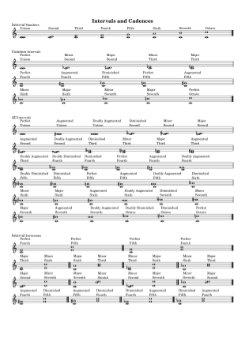

Learning about intervals in music is a fundamental bit of theory for recognising patterns and structures in music pieces. I have produced a free PDF download of interval examples. These can be downloaded as a ZIP file and printed for any purpose.
- The sheet music is notated on an A4 paper size
- Intervals start from explaining how to get the interval number. These are followed by the common intervals that are encoutered in other sheet music.
- Extra examples demonstrate how augmented, diminished, double augmented, and double diminished intervals work.
- Extra examples to explain inversions of intervals and their relationships.
A sample page is shown below:

The sheet has no copyright or attribution text that might get in the way of professionalism when presenting to students. The sheet is created using LilyPond, which is quite possibly the world's best music engraving software.